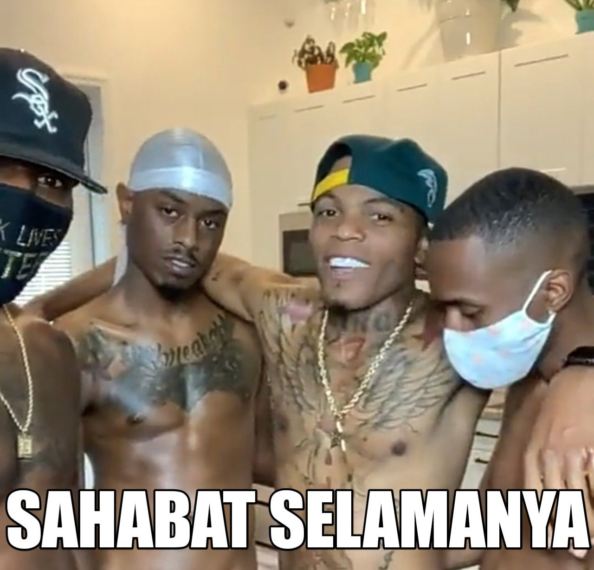

Alooo mbaak yupppp,
Makasih yo udah mau diambil, di ma'em yo mbak, jujur aku yang denger nya aja ikut ngerasa capek baru selesai koas langsung ngasisteni sampe dini hari, apalaahh
Dari Aku cuma mau bilang, Jangan terlalu di forsir yo mbakk. Emang sih sibuk itu bisa mengalihkan dari sesuatu yang lagi pengen kita alihin Tapi kadang badan udah drop fikiran masih coba terus cari cara untuk gimana caranya biar bisa distract halt tsb. Aku faham nek after break up memang gak segampang itu, tapi waktu terus berjalan.
Mungkin saat ini pantulan bola nya (states of grief) dalam kotak itu masih terasa besar (sesak) sempit dan pantulannya cepet. Tapi, lambat laun nanti juga akan pelan dan mengecil og mbak.
🔗 Learning to live with Grief: “The Ball in the Box”

Selalunya semoga yang terbaik buat mbak yupii. Apa pun itu yang bisa faham atas apa yang sudah, sedang dan akan terjadi, ya diri kita sendiri. Kalau boleh dikit curhat, simplenya dunia ku sekarang matahari nya dah jadi Bintang mati, bentar lagi incursion ini kalau di marvel, tapi aku anchor being nya jadi yaa Bring it on, There are still flowers in the mud, and bright summers yet to come. For the swords still sing, and my hands still answer.